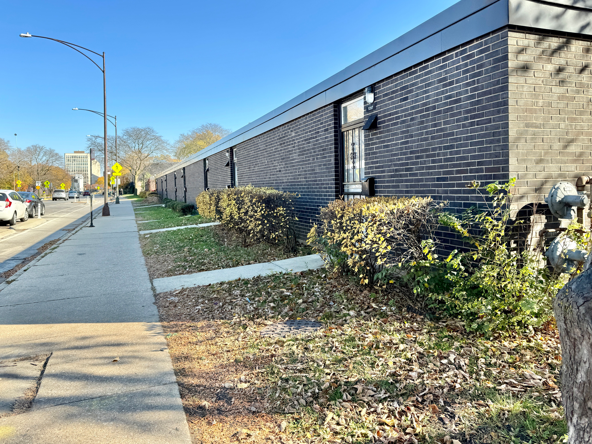
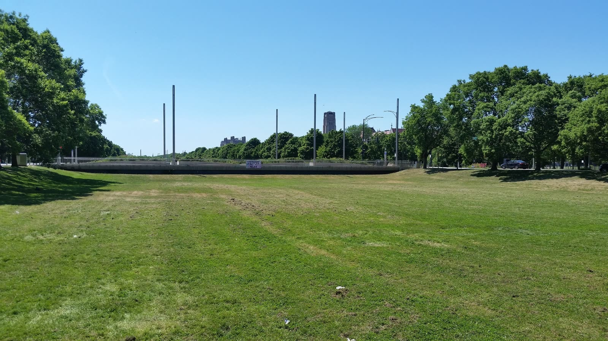
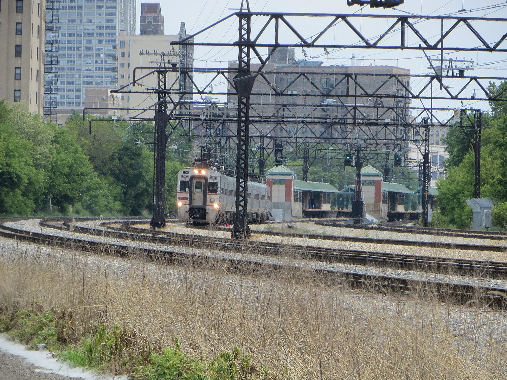

The walking tour on this sheet visits the ground on all four. Sheet four of four.
rooted-forward.org
After renewal, Hyde Park held for decades at roughly one-third Black and one-half white, one of the few substantially integrated neighborhoods in the country. The integration was real. It came at the expense of the renters and small businesses the plan removed. In 1962, after paired Black and white testers proved the university was still refusing Black tenants in its own buildings, students occupied the administration building for two weeks. The university changed the policy.
In 1891 Frederick Gibbs built twenty-six wooden shops at 57th Street for fair visitors. Artists rented them for fifty years. The Land Clearance Commission razed the row in 1962, and residents raised the money to build Harper Court in 1965, rents under one hundred dollars, so the artisans could stay. In 2007 the university bought Harper Court for $6.8 million. A glass office tower stands there now.

The Center opened on Juneteenth 2026, on the ground where the 1893 fair stood. Lakeside Alliance, a construction team led by four Black-owned Chicago firms, built it. Lines from the 2015 Selma speech are carved into the granite where Wells and Douglass once handed out their pamphlet.




